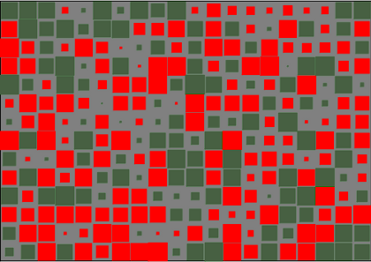
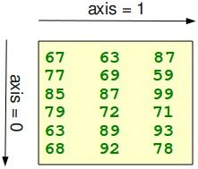

Introduction into NumPy

NumPy is an open source extension module for Python. The module NumPy provides fast
precompiled functions for numerical routines.
It adds support to Python for large, multi-dimensional arrays and matrices. Besides that
it supplies a large library of high-level mathematical functions to operate on these arrays.
SciPy (Scientific Python) extends the functionalites of NumPy with further useful functions for minimization,
regression, Fourier-transformation and many others.
Both NumPy and SciPy are usually not installed by default. NumPy has to be installed before installing SciPy.
Downloading SciPy is possible at this location:
http://www.scipy.org/download
NumPy and SciPy are a free (meaning "free" as in "free beer" and "free" as in "freedom") alternative to
MATLAB. Even though MATLAB has a huge number of additional toolboxes available,NumPy has the advantage
that Python is a more modern and complete programming language and is open source.
SciPy adds even more MATLAB-like functionalities to Python. Python is rounded out in the direction of MATLAB with
the plotting package Matplotlib, which provides MATLAB-like plotting functionality.
(Comment: The diagram of the image on the top is the graphical vizualisation of a matrix with 14 rows and 20 columns.
It's a so-called Hinton diagram. The size of a square within this diagram corresponds to the size of the value of the
depicted matrix. The colour determines, if the value is positive or negative. In our example: the colour red denotes
negative values and the colour green denotes positive values.)
NumPy is based on two earlier Python array packages. One of these is Numeric. Numeric is like NumPy a Python module
for high-performance, numeric computing, but it is obsolete nowadays. Another predecessor of NumPy is Numarray,
which is a complete rewrite of Numeric but is deprecated as well. NumPy is a merger of those two, i.e. it is build
on the code of Numeric and the features of Numarray.
One of the main advantages of NumPy is its advantage in time compared to standard Python.
Let's look at the following functions:
def trad_version():
t1 = time.time()
X = range(10000000)
Y = range(10000000)
Z = []
for i in range(len(X)):
Z.append(X[i] + Y[i])
return time.time() - t1
def numpy_version():
t1 = time.time()
X = numpy.arange(10000000)
Y = numpy.arange(10000000)
Z = X + Y
return time.time() - t1
The calls consume the following times:
>>> trad_version() 3.167140007019043 >>> numpy_version() 0.19529294967651367
Arrays in NumPy
Arrays constitute the central component of the module NumPy.The main difference to standard Python lists consists in the fact that the elements of a NumPy array have to be of the same type, usually float or int. NumPy arrays are by far more efficient the lists of Python. Principially, an array can be seen like a list with the following differences:
- All elements have to be of the same type, i.e. integer, float (real) or complex numbers
- The number of elements have to be known a priori, i.e. when the array is created. It can't be changed afterwards.
A NumPy Array can be generated from a list or a tuple with the array-method, as shown in the following example:
$ import numpy as np $ x = np.array([42,47,11], int) $ x $ array([42, 47, 11])
The array method transforms sequences of sequences into two dimensional arrays.
>>> x = np.array( ((11,12,13), (21,22,23), (31,32,33)) ) >>> print x [[11 12 13] [21 22 23] [31 32 33]] >>>Correspondingly, it converts sequences of sequences of sequences into three dimensional arrays:
>>> x = np.array( ( ((111,112), (121,122) ), ((211,212),(221,222)) ) ) >>> print x [[[111 112] [121 122]] [[211 212] [221 222]]] >>> print x[1][0][1] 212 >>> print x[1][1][1] 222 >>>
The attribute ndim tells us the number of dimensions of an array: >>> x = np.array( ((11,12,13), (21,22,23) )) >>> x.ndim 2The method shape() gives us the dimensions:
>>> x = np.array( ((7,3,0), (7,11,9), (15,3,7),(12,4,8) ))
>>> x.ndim
2
>>> x.shape
(4, 3)
>>> x
array([[ 7, 3, 0],
[ 7, 11, 9],
[15, 3, 7],
[12, 4, 8]])
>>>
|
 |
The "shape" of an array denotes a tuple with the number of elements per axis (dimension) In our example in the picture, the shape is equal to (6,3), i.e. we have 6 lines and 3 columns. We can work with arrays like we are used to work with lists: >>> x = np.array([42,47,11]) >>> x[:2] array([42, 47]) >>> x = np.array([42,47,11]) >>> x[0] 42 >>> x[:2] array([42, 47]) >>> x[1] = 49 >>> x array([42, 49, 11]) >>> |

|
The following example shows a 2-dimensional float array:
>>> x = np.array([[0.314, 0.5,17],[1.4142,0.67, 7]], float) >>> x[0] array([ 0.314, 0.5 , 17. ]) >>> x[1] array([ 1.4142, 0.67 , 7. ]) >>> x[0,2] 17.0 >>>
We can use slices with 2-dimensional arrays as well:
>>> x[:,0] array([ 0.314 , 1.4142]) >>> x[:,1] array([ 0.5 , 0.67]) >>> x[:,2] array([ 17., 7.]) >>>
The attribut dtype contains the type of an array:
>>> x.dtype
dtype('float64')
float64 is a numerical data type of NumPy, which stores numbers in double precision, similiar to float in Python.
Reshaping Arrays
There are two methods to flatten a multidimensional array:- flatten()
- ravel()
>>> x = np.array([[[ 0, 1],
... [ 2, 3],
... [ 4, 5],
... [ 6, 7]],
...
... [[ 8, 9],
... [10, 11],
... [12, 13],
... [14, 15]],
...
... [[16, 17],
... [18, 19],
... [20, 21],
... [22, 23]]])
>>> x.flatten()
array([ 0, 1, 2, 3, 4, 5, 6, 7, 8, 9, 10, 11, 12, 13, 14, 15, 16,
17, 18, 19, 20, 21, 22, 23])
>>> x
array([[[ 0, 1],
[ 2, 3],
[ 4, 5],
[ 6, 7]],
[[ 8, 9],
[10, 11],
[12, 13],
[14, 15]],
[[16, 17],
[18, 19],
[20, 21],
[22, 23]]])
>>> x.ravel()
array([ 0, 1, 2, 3, 4, 5, 6, 7, 8, 9, 10, 11, 12, 13, 14, 15, 16,
17, 18, 19, 20, 21, 22, 23])
The order of the elements in the array returned by ravel() is normally "C-style", i.e.
the rightmost index "changes the fastest" or in other words: In row-major order, the row
index varies the slowest, and the column index the quickest, so that a[0,1] follows [0,0].
The method reshape() gives a new shape to an array without changing its data, i.e. it returns a new array with a new shape.
>>> x = np.array(range(24))
>>> y = x.reshape((3,4,2))
>>> y
array([[[ 0, 1],
[ 2, 3],
[ 4, 5],
[ 6, 7]],
[[ 8, 9],
[10, 11],
[12, 13],
[14, 15]],
[[16, 17],
[18, 19],
[20, 21],
[22, 23]]])
>>> x
array([ 0, 1, 2, 3, 4, 5, 6, 7, 8, 9, 10, 11, 12, 13, 14, 15, 16,
17, 18, 19, 20, 21, 22, 23])
>>>
We show in the following example, how we can use slices to cut away the "border" of an array, i.e.
the first and last column and the first and last row of the array:
>>> x = np.array(range(100)) >>> y = x.reshape(10,10) >>> y[1:-1,1:-1]
Concatenating Arrays
In the following example we concatenate three one-dimensional arrays to one array. The elements of the second array are appended to the first array. After this the elements of the third array are appended:>>> x = np.array([11,22]) >>> y = np.array([18,7,6]) >>> z = np.array([1,3,5]) >>> np.concatenate((x,y,z)) array([11, 22, 18, 7, 6, 1, 3, 5])If we are concatenating multidimensional arrays, we can concatenate the arrays according to axis. Arrays must have the same shape to be concatenated with concatenate(). In the case of multidimensional arrays, we can arrange them according to the axis. The default value is axis = 0:
>>> x = np.array(range(24))
>>> x = x.reshape((3,4,2))
>>> y = np.array(range(100,124))
>>> y = y.reshape((3,4,2))
>>> z = np.concatenate((x,y))
>>> z
array([[[ 0, 1],
[ 2, 3],
[ 4, 5],
[ 6, 7]],
[[ 8, 9],
[ 10, 11],
[ 12, 13],
[ 14, 15]],
[[ 16, 17],
[ 18, 19],
[ 20, 21],
[ 22, 23]],
[[100, 101],
[102, 103],
[104, 105],
[106, 107]],
[[108, 109],
[110, 111],
[112, 113],
[114, 115]],
[[116, 117],
[118, 119],
[120, 121],
[122, 123]]])
>>>
>>> z = np.concatenate((x,y),axis = 1)
>>> z
array([[[ 0, 1],
[ 2, 3],
[ 4, 5],
[ 6, 7],
[100, 101],
[102, 103],
[104, 105],
[106, 107]],
[[ 8, 9],
[ 10, 11],
[ 12, 13],
[ 14, 15],
[108, 109],
[110, 111],
[112, 113],
[114, 115]],
[[ 16, 17],
[ 18, 19],
[ 20, 21],
[ 22, 23],
[116, 117],
[118, 119],
[120, 121],
[122, 123]]])
>>> z = np.concatenate((x,y),axis = 2)
>>> z
array([[[ 0, 1, 100, 101],
[ 2, 3, 102, 103],
[ 4, 5, 104, 105],
[ 6, 7, 106, 107]],
[[ 8, 9, 108, 109],
[ 10, 11, 110, 111],
[ 12, 13, 112, 113],
[ 14, 15, 114, 115]],
[[ 16, 17, 116, 117],
[ 18, 19, 118, 119],
[ 20, 21, 120, 121],
[ 22, 23, 122, 123]]])
>>>
Adding New Dimensions
New dimensions can be added to an array by using slicing and np.newaxis. We illustrate this technique with an example:
>>> x = np.array([2,5,18,14,4])
>>> x
array([ 2, 5, 18, 14, 4])
>>> y = x[:, np.newaxis]
>>> y
array([[ 2],
[ 5],
[18],
[14],
[ 4]])
Initializing Arrays with Ones and Zeros
There are two ways of initializing Arrays with Zeros or Ones. The method ones(t) takes a tuple t with the shape of the array and fills the array accordingly with ones. By default it will be filled with Ones of type float. If you need integer Ones, you have to set the optional parameter dtype to int:
>>> np.ones((2,3))
array([[ 1., 1., 1.],
[ 1., 1., 1.]])
>>> np.ones((3,4),dtype=int)
array([[1, 1, 1, 1],
[1, 1, 1, 1],
[1, 1, 1, 1]])
What we have said about the method ones() is valid for the method zeros() analogously, as we can see
in the following example:
>>> np.zeros((2,4))
array([[ 0., 0., 0., 0.],
[ 0., 0., 0., 0.]])
There is another interesting way to create a matrix with Ones or a matrix with Zeros,
if it has to have the same shape as another existing array.
Numpy supplies for this purpose the methods ones_like(a) and zeros_like(a).
>>> x = np.array([2,5,18,14,4]) >>> np.ones_like(x) array([1, 1, 1, 1, 1]) >>> np.zeros_like(x) array([0, 0, 0, 0, 0])